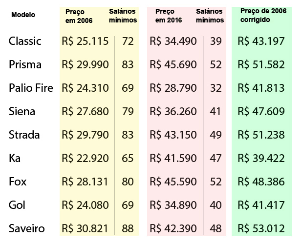

# Setup
from langchain.text_splitter import RecursiveCharacterTextSplitter # Split - Tokenization
from langchain.embeddings import OpenAIEmbeddings # Embeddings
from langchain.vectorstores import Chroma # Vector Store
from langchain.llms import OpenAI # Models
from langchain.chat_models import ChatOpenAI # Chat
from langchain.chains.question_answering import load_qa_chain # QA
from langchain.callbacks import get_openai_callback # Callback
import os
import textract
import warnings
import pandas as pd
warnings.filterwarnings("ignore")
pd.set_option('display.max_columns', None) LLM - ChatGPT applied on Specific Context
Introduction
Devido aos avanços da IA Generativa com os LLMs, o ChatGPT, desenvolvido pela OpenAI, tornou-se uma ferramenta popular para geração de texto. Através da interface em https://chat.openai.com/, os usuários podem interagir com o ChatGPT para receber respostas, resumos de texto e traduções. No entanto, para responder a perguntas específicas de contexto inédito, como as baseadas em um documento PDF, é geralmente necessário usar a API do ChatGPT.
Para simplificar essa tarefa, surgiu o LangChain https://www.langchain.com/, uma estrutura de código aberto que facilita o desenvolvimento de aplicativos com LLMs. O LangChain atua como uma interface genérica para diferentes LLMs, permitindo a construção de aplicativos LLM integrados a fontes de dados externas.
Este projeto visa demonstrar a aplicação prática do ChatGPT em um contexto específico com o auxílio do LangChain, explorando cada etapa e os principais desafios envolvidos.
Desenvolvimento
Setup and Constants:
Importando todos os módulos necessários os quais já foram previamente instalados.
Definindo as constantes que serão utilizadas ao longo do código.
# Constants
OPENAI_API_KEY = os.environ.get('OPENAI_API_KEY') # Definida como variável de ambiente
FILE_PATH_CONTEXT = "./source/project1/context/ValeskaAlves.pdf" # Path para o arquivo de contexto
EMBEDDING_MODEL_NAME = "text-embedding-ada-002" # Modelo para o embedding do contexto
FILE_PATH_DB = "./source/project1/chroma/" # Path para Vector Store
MODEL_NAME = "gpt-3.5-turbo" # Modelo para responder as perguntasDocument Loading
Aqui carregamos o arquivo de contexto, que pode estar em qualquer formato (https://textract.readthedocs.io/en/stable/) e convertemos em uma string.
# Document Loading
file_path = FILE_PATH_CONTEXT
doc = textract.process(file_path)
text = doc.decode('utf-8')Document Splitting - Tokenization
Nesta etapa, nosso objetivo é segmentar o contexto em vários documentos, com a principal ideia de dividir o texto em unidades semanticamente relevantes.
Por simplicidade, essa divisão será feita considerando um número máximo de caracteres por documento, levando em conta a estrutura textual original, ou seja, espaços em branco, quebras de linhas e parágrafos podem ser considerados como separadores aqui.
Existem diversas técnicas para efetuar este processo, estamos usando apenas uma delas.
# Document Splitting - Tokenization
text_splitter = RecursiveCharacterTextSplitter(
chunk_size = 512, # Quantidade máxima de caracteres por split
chunk_overlap = 24, # Quantidade de máxima de caracteres sobrepostos por split
)
chunks = text_splitter.create_documents([text])Embeddings and Vector Stores
Embeddings:
Cada “chunk” gerado na etapa anterior é utilizado para construir uma representação numérica do texto em formato de vetor. Dessa forma, textos com conteúdo semanticamente semelhante terão vetores semelhantes no “embedding space” (espaço de incorporação). Assim, podemos comparar embeddings (vetores) e encontrar textos semelhantes.
Observações:
O “chunking” (divisão realizada na etapa anterior) é o processo de dividir o texto em pedaços ou “chunks” semânticos, que podem ser frases, parágrafos ou outras unidades maiores. No entanto, esses chunks podem conter múltiplos tokens.
O número de tokens nem sempre é igual ao número de embeddings. Embora cada token geralmente corresponda a um embedding, um único token às vezes pode corresponder a múltiplos embeddings, especialmente em casos onde é utilizada a tokenização de subpalavras. Além disso, pode haver tokens que não possuem embeddings correspondentes, dependendo da cobertura do vocabulário do modelo de embedding utilizado. Portanto, embora haja frequentemente uma forte correlação entre o número de tokens e o número de embeddings, eles nem sempre são exatamente iguais.
Vector Stores:
Um “armazenamento de vetores” é um banco de dados onde é possível pesquisar facilmente vetores semelhantes posteriormente. Isso se torna útil quando tentamos encontrar documentos relevantes para uma questão. Nesta etapa, vamos armazenar os embeddings em um banco de dados NoSQL.
#Custom Embeddings Function
class CustomOpenAIEmbeddings:
def __init__(self, api_key, model_name):
self.api_key = api_key
self.model_name = model_name
def __call__(self, inputs):
# Assume inputs is a list of texts and we're querying OpenAI API for embeddings
responses = openai.Embedding.create(
input=inputs,
model=self.model_name,
user=self.api_key
)
# Extract embeddings from the responses
return [response['data'] for response in responses['data']]
# Using the custom embedding function
embeddings = CustomOpenAIEmbeddings(
api_key=OPENAI_API_KEY,
model_name=EMBEDDING_MODEL_NAME
)
# Vector Stores
persist_directory = FILE_PATH_DB
vectordb = Chroma.from_documents(
documents=chunks,
embedding=embeddings,
persist_directory=persist_directory
)Retrieval
Na fase de recuperação (retrieval), buscamos nos embeddings armazenados no banco de dados os mais relevantes para responder à pergunta que estamos formulando. Em outras palavras, procuramos identificar os trechos de texto que podem conter informações necessárias para responder à pergunta, pois são esses trechos que serão enviados para o ChatGPT junto com a pergunta, em vez de todo o contexto.
A recuperação é um dos principais desafios enfrentados ao tentar responder perguntas com base em nossos documentos. Muitas vezes, quando a resposta à nossa pergunta não é satisfatória, isso se deve a um problema na fase de recuperação. Para lidar com isso, existem várias técnicas disponíveis, e adotaremos a seguinte abordagem:
Maximum Marginal Relevance(MMR): Essa técnica seleciona os fetch_k embeddings mais relevantes para responder à pergunta e, dentre esses, escolhe os k mais relevantes e diversos entre si. Isso ajuda a contornar problemas de recuperação de tópicos duplicados, caso ocorram.
Nessa etapa, é crucial definir nossa pergunta em relação ao contexto. No presente caso, vamos utilizar um currículo profissional (apresentado logo abaixo) e formular a seguinte questão: Qual o nome deste candidato ?

# Retrieval
query = "Qual o nome deste candidato ?"
# Maximum Marginal Relevance(MMR)
docs = vectordb.max_marginal_relevance_search(query, k= 2 , fetch_k= 5)Question Answering
Agora que temos os documentos mais relevantes para responder à nossa questão, obtidos na fase anterior de recuperação, procedemos a passar esses documentos juntamente com a pergunta original para um modelo de linguagem (ChatGPT), a fim de obter uma resposta à nossa consulta.
# Question Answering
llm = ChatOpenAI(model_name=MODEL_NAME, temperature=0)
chain = load_qa_chain(llm, chain_type="stuff")
with get_openai_callback() as cb:
r = chain.run(input_documents=docs, question=query)
print(r)
print("\n")
#print(cb)Context 1
Fazendo perguntas ainda dentro do mesmo contexto anterior (currículo profissional)
Instanciando o modelo
model = AskAboutContext(
key = OPENAI_API_KEY,
file_path_context = FILE_PATH_CONTEXT ,
file_path_db = FILE_PATH_DB,
embedding_model_name = EMBEDDING_MODEL_NAME,
model_name = MODEL_NAME,
)
model.fit()Pergunta 1
model.query("Qual a cidade deste candidato?")Pergunta 2
model.query("Qual o objetivo deste candidato?") Context 2
Faremos agora perguntas sobre a tabela de preços de veículos logo abaixo.

model = AskAboutContext(
key = OPENAI_API_KEY,
file_path_context = "./source/project1/context/precos.jpg" ,
file_path_db = FILE_PATH_DB,
embedding_model_name = EMBEDDING_MODEL_NAME,
model_name = MODEL_NAME,
)
model.fit()Pergunta 1
model.query("Quais são os modelos de carros existentes nessa tabela?")Pergunta 2
model.query("Qual foi o modelo mais barato no ano de 2016?")